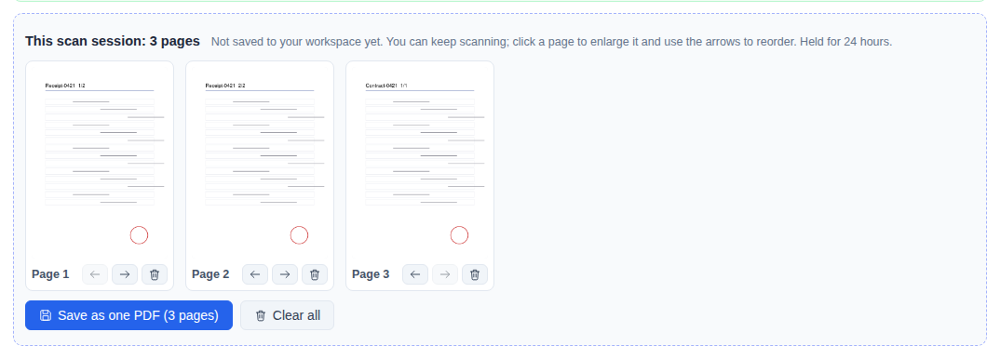

MFP Scan & Fetch (single-user)
Without sign-in, everyone shares the same workspace. If this system runs as a server for several people without sign-in, anyone who can reach the site can see the scanned and retrieved files, so documents containing confidential or personal data are effectively exposed. Enable sign-in first if several people use it.
Each person has their own MFP list and workspace; administrators can set up shared MFPs and choose members.
Read the guideSign-in is not enabled, the service listens only on this computer (127.0.0.1), and only you use it.
Start a scan on the MFP from your own computer, or retrieve documents stored on the MFP, into the workspace on this computer. No account and no administrator setup is needed.
Before you start
Check these four things before you start.
Without sign-in the workspace is not split by account; anyone else who uses this computer can see the files you scan and retrieve.
Choose not to open the service to the local network during installation (it then accepts connections only on 127.0.0.1). If it is already open, run sudo jtdt bind 127.0.0.1 (on Windows, run jtdt bind 127.0.0.1 as administrator).
The address is http://127.0.0.1:8765/tools/mfp-fetch/. Without sign-in this tool only works locally on this computer; connections from other computers are refused.
This computer must be able to reach the MFP's IP address or host name; the site only connects to internal network addresses.

Add an MFP
Enter the MFP's address, save it after the connection test passes, and it appears under My MFPs.
- 1
Enter the address
Under Add an MFP, enter the IP address or host name. Leave the connection method on Auto; when both HTTPS 443 and HTTP 80 work, 443 is used.
- 2
Connection test
Press Connection test. It only reads the home page and the scan capabilities and sends no credentials; the result shows the brand, model and what this MFP can do.
- 3
Save
Check the model, then press Save this MFP.


Scan from this site
An eSCL-capable MFP (compatibility shows Can scan) can be told to scan straight from this site.
- 1
Place the document
Put the document on the MFP's glass or in the document feeder.
- 2
Choose settings and scan
Choose “Scan” in the list, pick the source, colour, resolution, paper and file format, then choose “Start scan”. Each MFP does one job at a time; others queue automatically.
- 3
Preview and keep scanning
When saving as PDF, scanned pages are first placed in “This scan session”; you can reorder or delete pages, put the next sheet on the glass and choose “Start scan” again.
- 4
Save as one PDF
Choose “Save as one PDF” to merge all pages into one file in your workspace. When saving as JPEG, each page goes straight to your workspace.


Retrieve documents stored on the MFP
First store the document in a mailbox, the Document Server or a box on the MFP's panel, then press Retrieve here (Mailbox retrieval on FUJIFILM).
- 1
Store it on the MFP
On the panel, save to a mailbox, the document server or a box, depending on the brand.
- 2
Enter sign-in details
Enter the mailbox number, account or User Code as the panel requires. They are sent once; if they are wrong it stops there.
- 3
List and choose a location
Press List files; switch folders under Position, and for a password-protected folder enter the password and press Open folder.
- 4
Tick and retrieve
Tick the documents you want, choose PDF (recommended) and press Retrieve; the files are saved to your workspace.


For retrieval by brand and the verified models, see the MFP Scan & Fetch guide.
Where files go
Scanned and retrieved files are in the workspace, where you can open or download them or pick them directly in other tools.
Scanned and retrieved files are stored on this computer and never pass through a cloud service.
Files are deleted automatically when they expire; change the retention time and quota in Settings → Workspace settings. You can delete files earlier once you are done with them.
Listing and retrieving never change the originals on the MFP; only when Fetch and delete is selected on FUJIFILM is the original deleted, and only after the copy is confirmed saved.
When several people use it
Single-user mode has no accounts and is not suitable for several people.
With sign-in enabled, each person has their own MFP list and workspace, and administrators can set up shared MFPs and choose members. See the MFP Scan & Fetch guide for the setup.
FAQ
If something still goes wrong, start here.
Opening it from another computer says it can only be used locally on this host
Without sign-in this tool only works on the computer where the system is installed (the address must be 127.0.0.1 or localhost). To use it from another computer, enable sign-in first.
The red warning says the service accepts network connections
The service is bound to a network address (for example 0.0.0.0), so other computers can reach this site and its workspace. If only you use it, run sudo jtdt bind 127.0.0.1 (on Windows, run jtdt bind 127.0.0.1 as administrator); for several users, enable sign-in first.
The connection test fails or files cannot be listed
Check the step-by-step diagnosis of the connection test and start from the step that failed; you can also download a diagnostic report. KYOCERA needs the document service on port 9091 or 9090 enabled on the MFP; if a FUJIFILM port returns 406, switch to the other connection method.
A RICOH folder needs a password
Choose the folder under Position, enter the folder password and press Open folder. A wrong password is not retried automatically; check it and enter it again.
Reporting a problem
Open Technical details, press Copy protocol log and attach it when you open an issue on GitHub. The protocol log contains no accounts, passwords or document contents. Report at: GitHub Issues.